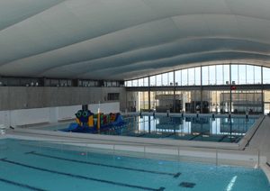

PREMIÈRE INSCRIPTION EN PETITE SECTION DE MATERNELLE
Afin d'anticiper au plus juste les besoins pour la rentrée scolaire des enfants en petite section de maternelle pour septembre 2014, la ville de Serris souhaite inscrire tous les enfants nés entre le 1er janvier et le 31 décembre 2011.
Les pré-inscriptions scolaires sont à effectuer auprès du service Accueil Famille entre le 24 février et le 30 avril 2014.
Afin de permettre le stationnement des participants et de de sécuriser les abords du complexe sportif pour les nombreux visiteurs attendus lors de 3 prochains événements sportifs, le cours du Rhin sera interdit à la circulation (sauf accès au gymnase) dans sa partie comprise entre la rue des Scandinaves et le parvis du gymnase Olympe de Gouges(voir plan) :
Une présignalisation et une déviation seront mises en place.
Nous vous prions de bien vouloir nous excuser pour la gêne occasionnée.
INFORMATIONS TRAVAUX
Travaux Zac du Couternois
Les travaux de viabilisation de la Zone d'Aménagement Concerté du Couternois ont débuté et entraîneront des perturbations sur la RD 231 (route de Provins) et l'avenue du Prieuré de jour comme de nuit (voir plan).
Par conséquent du 17 février au 11 mars :
La RD231 sera fermée (approximativement jusqu'au 28 février) à la circulation entre l'avenue du Prieuré et le RD 406. Une déviation par la ZAC du Prieuré est mise en place.
À la suite de ces travaux, la RD 231 sera réouverte tandis que l'avenue du Prieuré sera fermée à la circulation (jusqu'au 11 mars au maximum).
Le centre aquatique du Val d'Europe sera fermé du 17 au 25 février 2014 pour vidange technique.

RAMASSAGE DES ORDURES EXTRA-MÉNAGÈRES
Mercredi 26 février 2014
Dates de ramassagedes Ordures extra-ménagères 2014. Mercredi 26 février 2014, mercredi 28 mai 2014, mercredi 17 septembre 2014 et mercredi 17 décembre 2014. Les encombrants ne doivent être sortis que la veille des jours indiqués ci-dessus.
TOURNOI DE FUTSAL
Samedi 1er et dimanche 2 mars,
gymnase Olympe de Gouges
Samedi 1er mars, de 9h30 à 17h30
Tournoi U16 Féminines
Dimanche 2 mars, de 9h30 à 17h30
Tournoi en salle U12
www.mairie-serris.net
Conformément à la loi du 6 janvier 1978 relative à l'informatique et aux libertés,
vous avez le droit d'exercer un pouvoir d'accés et de rectification des données vous concernant.
Pour exercer ce droit, vous pouvez écrire ou envoyer
un mail au webmaster du site
(n.humbert@mairie-serris.net).